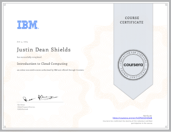
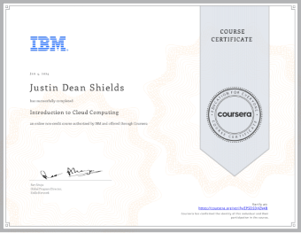

Information
About Me
About Me
I'm Justin Shields & a
I am a graduate student pursuing a Master's in Computer Science at Florida International University, with a Bachelor's degree in the same field. I am passionate about continuously learning and staying up-to-date with the latest tech trends, having completed multiple certifications and courses. I thrive in collaborative environments and am eager to contribute to a dynamic team, leveraging my skills to drive the company's success while advancing my career.
Website: techwithjustin.net
Ability
My skills
✓ Experienced with Cloud Computing
✓ Experienced in Python
✓ Experienced with data structures and algorithms
✓ Proficient in CI/CD
✓ Skilled in AWS Cloud Computing tools
✓ Experienced with HTML and CSS
✓ Proficient in GitHub and Git
✓ Knowledgeable in Agile methodology
✓ Experienced with React
What I have achieved
Awards & Certifications
- AWS Certified Solutions Architect – Associate (Verification Link)
- AWS Certified Cloud Practitioner (Verification Link)
- Bachelor's in Computer Science (April 2024)
- Graduated on the Dean's List (April 2024)
- Completed The Complete Python Developer course
- Completed Google Cloud Fundamentals: Core Infrastructure course
- Completed Introduction to Cloud Computing by IBM course
- Completed Python Data Structures & Algorithms + LEETCODE Exercises

 

Projects
Creative Work
Cloud Resume Challenge
This website you are looking at is an end product of the Cloud Resume Challenge.
GitHub Repository

Geek Text API
This project was about the creation of a Rest API using Scrum methodology.
GitHub Repository
Password Security Check Tool
This project focuses on developing a command-line tool to verify password security.
GitHub Repository
Hacker News Data Scraper
This project involves developing a Python script to scrape news stories from Hacker News.
GitHub Repository

Image Classification with ImageAI
This project involves creating a Python script for image classification using the ImageAI library.
GitHub Repository

Weather App
This project involves creating a weather application using React that displays current weather data.
GitHub Repository
Live Weather App